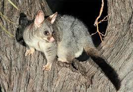
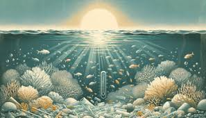
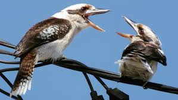

Intro: Impact of Climate Change on Wildlife
Wildlife in Brisbane have been struggling with serious risks from extreme heat, habitat loss, and lack of water caused by rising temperatures. Many animals in the wild are in danger. The main reasons are the increasing frequency and intensity of heatwaves, loss of natural habitats, and water scarcity.
As temperatures rise, many native species are unable to adapt quickly enough, leading to declining populations and disrupted ecosystems.
Effect on different types of wildlife

Land Animals
Many terrestrial animals struggle to find shade and water during extended heatwaves, leading to dehydration and heat stress.

Marine Life
Rising water temperatures affect marine creatures, including fish migrations and coral bleaching in nearby coastal areas.

Birds
Native birds face challenges finding water sources and suitable nesting environments as habitat conditions change.
Land Animals
- Koalas: Suffering from heat stress, dehydration, and habitat loss due to rising temperatures and more frequent bushfires.
- Eastern Grey Kangaroos: Face food and water shortages during droughts and are at greater risk from road accidents as they move into urban areas.
- Red-necked Wallabies: Struggle with dehydration, heat exposure, and disrupted breeding caused by extreme weather.
- Brushtail Possums: Impacted by urban heat and food scarcity as natural habitats shrink and become hotter.
- Short-beaked Echidnas: Vulnerable to overheating and habitat destruction from bushfires and land clearing.
Marine Life
- Coral Reefs: Suffering from bleaching due to rising sea temperatures, disrupting entire marine ecosystems.
- Fish Populations: Shifting their migration patterns as ocean waters warm, affecting local fisheries and predator-prey relationships.
- Seagrass Beds: Vital for marine biodiversity and dugong feeding, are declining due to heat stress and pollution from extreme rainfall events.
- Jellyfish Blooms: Becoming more frequent in warmer waters, which can unbalance ecosystems and increase health risks for beachgoers.
- Marine Turtles: Face skewed gender ratios because their hatchling sex is temperature-dependent, with more females being born in hotter sands.
Birds
- Laughing Kookaburras: Losing access to water and shade, making it harder to survive prolonged heatwaves.
- Rainbow Lorikeets: Struggle to find nectar as flowering patterns of native plants shift with changing rainfall and temperatures.
- Magpies: Face increased heat stress and reduced nesting success during extreme weather conditions.
- Waterbirds: Like ibises and ducks, are losing wetland habitats due to drought and urban development.
- Raptors: Such as hawks and owls, experience declining prey availability as heatwaves reduce small mammal and insect populations.